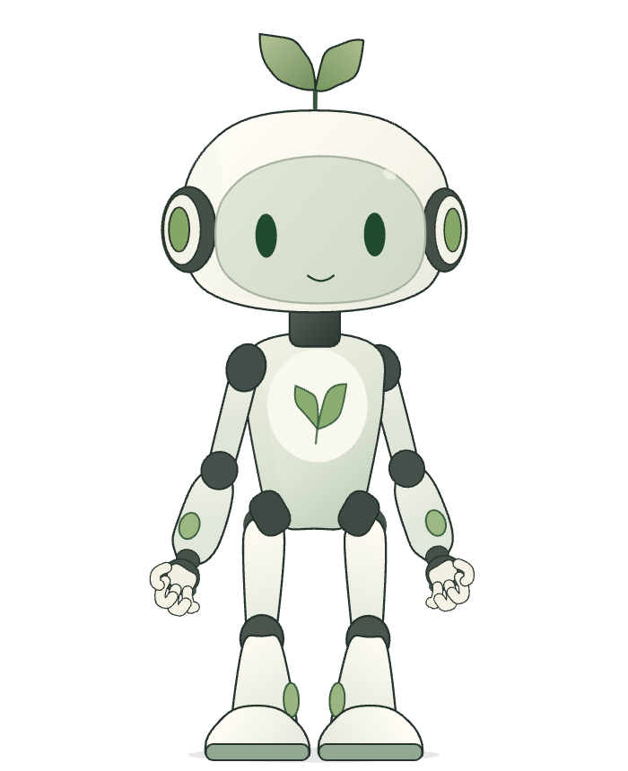

A MORE INTENTIONAL START
Make room for what matters.
Choose a direction, learn your starting point, and build a plan that fits your life.
- 01Set your direction
- 02Find your baseline
- 03Begin your plan
Skipping the overview still takes you through setup and the four assessments.

THE PROCESS
Four check-ins. A clearer start.
First, a few choices about your goals. Then four short check-ins to shape your starting point.
- At your pacePause and return whenever you need.
- Progress savedYour place is kept on this device.
- Private by defaultYour results stay yours.
Question 1 of 8
Shape your starting point.
Eight quick choices. You can change them later.
READY FOR THE NEXT STEP
Your direction is set.
Next are four short check-ins. You can pause between them and return anytime.
Your progress is saved on this device.